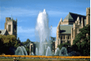
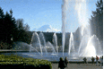
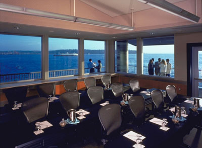

|  |  |
 |
 |  |
Bell Harbor International Conference Center
The Bell Harbor International Conference Center and its surrounding Bell Street Pier offer one of Seattle's premiere conference venues. From the Bay Auditorium fashioned after the United Nations to the rooftop plaza with sweeping views of Seattle and Mt. Rainier, Bell Harbor sets the stage for history making occasions.



Driving Directions
To Bell Harbor International Conference Center from I-5 South:
- Take Exit 167 (West Mercer Street/Fairview Avenue)
- Turn right onto Fairview Avenue
- Take the first left onto Valley Street
- Stay left; Valley Street merges into Broad Street
- Continue on Broad Street to Elliott Avenue, and turn left
- Once you pass the Wall Street intersection, park in the Art Institute of Seattle parking garage on your immediate right
To Bell Harbor International Conference Center from I-5 North (coming from Sea-Tac Airport):
- Take the Madison Street exit (also called Convention Place exit)
- Turn left onto Madison Street
- Stay on Madison Street until you come to the waterfront
- Turn right on Alaskan Way
- You will pass Pier 66 on your left; the next street after the sky bridge is Wall Street. Turn right on Wall Street.
- Turn right on Elliott Avenue
- Park in the Art Institute of Seattle parking garage on your immediate right
- Take the sky bridge to the Conference Center, World Trade Center Seattle, and Odyssey, the Maritime Discovery Center
- The International Promenade is located in the Cruise Ship Terminal one block north of Bell Harbor on Alaskan Way. To access, follow the directions to Bell Harbor and take the elevator to the ground level.
***Please note the two parking garage entrances, Elliott Avenue and Wall Street***
2211 Alaskan Way, Pier 66
Seattle, WA 98121
phone: 206.441.6666